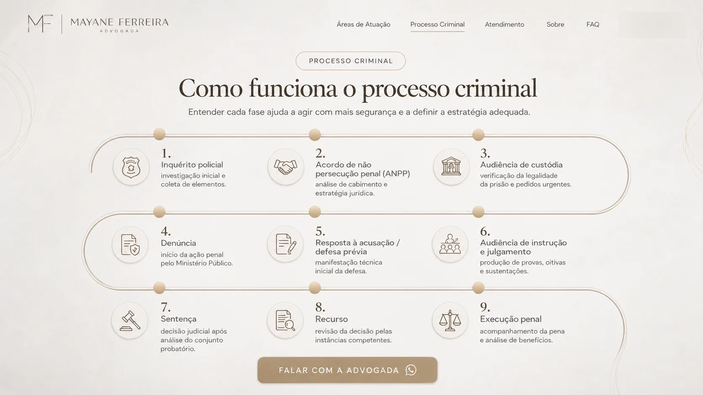
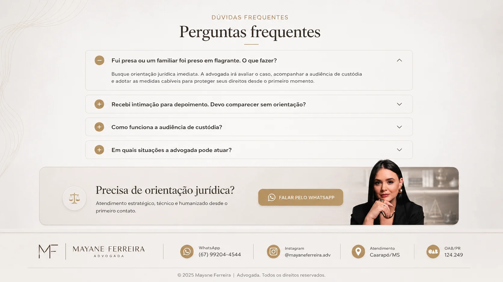

Sigilo profissional
Atendimento conduzido com discrição, responsabilidade e respeito à confidencialidade das informações.
Defesa jurídica em prisão em flagrante, audiência de custódia, inquérito policial, intimações e processos criminais, com atendimento em Caarapó/MS e região.
Plantão criminal 24h · Atendimento individual · Estratégia desde o primeiro contato
Atendimento online · Acompanhamento humanizado · Análise individual do caso
Fale no WhatsApp para solicitar orientação jurídica. Telefone: (67) 99204-4544. Instagram: @mayaneferreira.adv.
Em casos de prisão em flagrante, investigação, cumprimento de mandado, intimação para depoimento ou condução à delegacia, o tempo é fator determinante.
A orientação jurídica imediata ajuda a preservar direitos, evitar decisões precipitadas e estruturar a defesa desde o início.
Advogada criminalista com atuação estratégica em Caarapó/MS e região.
A Dra. Mayane Ferreira atua na advocacia criminal com foco em defesa técnica, orientação clara e atendimento humanizado em situações que exigem cautela, estratégia e resposta imediata.
Sua atuação abrange prisão em flagrante, audiência de custódia, inquérito policial, intimações, processos criminais e execução penal, sempre com análise individualizada e compromisso com a proteção de direitos.
OAB/PR 124.249 · Plantão criminal 24h · Atendimento em Caarapó/MS e região.
Em situações delicadas, cada decisão jurídica precisa ser tomada com estratégia, cautela e leitura técnica do caso.
Quando há urgência, orientação correta e atuação imediata fazem diferença.
Entre em contato para uma análise inicial do caso.
Defesa técnica em casos urgentes e situações que exigem orientação imediata.
Atuação nas primeiras horas após a prisão, análise da legalidade e orientação à família.
Acompanhamento técnico para apresentação de pedidos cabíveis e preservação de direitos.
Orientação e defesa desde o início da investigação, com acompanhamento em oitivas e intimações.
Suporte antes do comparecimento e estratégia para condução segura do caso.
Acompanhamento técnico em todas as fases do processo criminal.
Progressão de regime, remição, livramento condicional e análise de benefícios conforme o caso.
Confiança
Cada caso é conduzido com escuta atenta, análise individual e comunicação clara em todas as etapas.
Atendimento conduzido com discrição, responsabilidade e respeito à confidencialidade das informações.
Cada situação é avaliada conforme os fatos, documentos, urgência e possibilidades jurídicas.
Orientação clara e acolhedora para quem precisa entender o que fazer em um momento delicado.
Tudo começa com uma conversa clara, segura e individualizada.
Envie uma mensagem pelo WhatsApp com um breve relato da situação. Se houver urgência, informe no primeiro contato.
A advogada analisa o contexto inicial, esclarece os primeiros pontos e orienta sobre os próximos passos possíveis.
Se necessário, é agendada conversa online ou presencial para aprofundar o caso, alinhar estratégia e formalizar a atuação.
Com a contratação, começa o acompanhamento jurídico com informação clara, estratégia e suporte em cada etapa.

Entender cada fase ajuda a agir com mais segurança e a definir a estratégia adequada.
Investigação inicial e coleta de elementos.
Análise de cabimento e estratégia jurídica.
Verificação da legalidade da prisão e pedidos urgentes.
Início da ação penal pelo Ministério Público.
Manifestação técnica inicial da defesa.
Produção de provas, oitivas e sustentações.
Decisão judicial após análise do conjunto probatório.
Revisão da decisão pelas instâncias competentes.
Acompanhamento da pena e análise de benefícios.
O escritório está localizado em Caarapó/MS e atende clientes da cidade e região com presença, agilidade e comprometimento.
Para outras localidades, o atendimento online permite orientação jurídica com a mesma clareza, sigilo e suporte individualizado em cada etapa do caso.
Caarapó/MS e região · Plantão criminal 24h · Atendimentos e parcerias · WhatsApp: (67) 99204-4544.

Busque orientação jurídica imediata. A advogada poderá avaliar o caso, acompanhar a audiência de custódia e adotar as medidas cabíveis para preservar direitos desde o primeiro momento.
Antes de comparecer, é recomendável buscar orientação jurídica. Uma declaração mal conduzida pode impactar o andamento do caso. A defesa técnica ajuda a entender riscos e próximos passos.
A audiência de custódia ocorre após a prisão em flagrante e serve para verificar a legalidade da prisão, avaliar eventuais irregularidades e analisar medidas cabíveis conforme o caso.
A atuação pode ocorrer em prisão em flagrante, audiência de custódia, inquérito policial, intimação para depoimento, ação penal, execução penal e demais situações criminais que exijam defesa técnica.